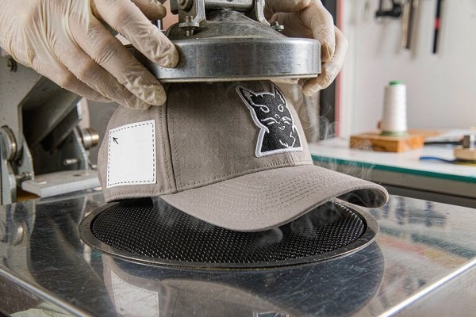

Patch Placement Guide: Optimal Positioning Tips
A beautifully embroidered patch in the wrong spot still looks wrong. This patch placement guide gives you the exact measurements professionals use for chest, sleeve, cap, and back positioning — plus the spacing, symmetry, and sizing rules that make any patch sit like it was factory-installed.
1. Why Patch Placement Matters More Than Patch Size
Ask someone why a jacket with patches looks "off" and they usually can't name the reason — but their eyes catch it instantly. Nine times out of ten, the problem is patch placement, not the patch itself. A slightly crooked chest badge or a sleeve patch sitting too close to the cuff undermines even the best embroidery.
Good placement does three jobs at once: it frames the garment's natural lines (collar, seams, placket), it keeps the emblem readable from a normal distance, and it survives movement — a patch placed over a fold or a seam will pucker the first time the garment bends. Get the position right and even a modest custom embroidered patch reads as premium.
2. The Classic Placement Map: Chest, Sleeve, and Back
Most placement questions come down to a handful of standard zones that the uniform and workwear industries have refined over a century. Here are the measurements we use on the production floor:
Left chest (the classic corporate spot)
Position the patch so its center sits 7.5–9 inches (19–23 cm) down from the shoulder seam, aligned along the placket line — or, on button shirts, 4 inches below the collar point and centered over the second button. Standard left-chest patches run 2.5–4 inches wide. Anything wider starts wrapping around the chest curve and loses its shape.
Right chest and paired chest patches
Name badges and flags traditionally go on the right chest, mirroring the left measurement exactly. When a garment carries two chest patches — think pilot uniforms with a flag on one side and wings on the other — symmetry is the whole game: both patches must sit at identical heights, even if their sizes differ slightly.
Sleeve and shoulder placement
Sleeve patches follow military convention: top of the shoulder seam down to the patch center, roughly 1 inch below the shoulder seam on the wearer's left arm for ranks and unit crests. Traditional shoulder marks and chevron insignia sit even closer to the seam, centered on the outer face of the sleeve so they stay visible when the arm hangs naturally. Keep every sleeve patch at least 1 inch above the elbow crease, or it will wrinkle loose within a few wears.
Full back and back yoke
Large back patches center horizontally between the shoulder seams, with the top edge starting 2–3 inches below the collar seam. The classic 10–12 inch back patch on a biker vest or work jacket fills this zone perfectly. On jackets with a back yoke seam, either center the patch across the seam deliberately or lift it fully above the seam — half-crossing it looks accidental.
3. Cap and Headwear Placement: The Seam Rule
Hats deserve their own section because one rule dominates everything: the front panel of a structured cap is built around its two crown seams, and your patch must sit dead-center between them. The standard target is 2 to 2.5 inches above the brim, measured from the brim's top stitching to the bottom edge of the patch.
Two practical constraints follow from this. First, patch width is limited: the front panel between the seams is only about 5 inches wide at the brim and narrows going up, so a cap patch wider than 4.2 inches will fight the panel's curve. Second, unstructured (dad-hat style) caps have a soft, floppy front — a stiff backing type with sew-on attachment holds shape far better than a heavy iron-on slab that telegraphs its edges through the fabric. For the full headwear breakdown, our hat branding guide walks through panel-by-panel options.

4. Placement by Garment: Jackets, Vests, Backpacks
Beyond the classic uniform zones, a few garment-specific habits save a lot of trial and error:
- Denim and bomber jackets: The left chest handles a 3–4 inch emblem; the back yoke or full back handles the hero patch. Sleeve placement works only above the cuff ribbing — leave the last 2 inches clear or the patch rubs against the wrist.
- Biker and club vests: Convention rules here, and convention is strict — large top rocker high on the back, center patch between the shoulder blades, bottom rocker below it. Our motorcycle club guide maps the full layout.
- Backpacks and gear: Place patches on the flat front panel, at least 1.5 inches away from zippers and straps so the stitching never crosses a stress point. Seasoned travelers often size down: our patch size guide recommends 2–3 inch patches for bags, where oversized emblems catch on door frames and seat belts.
- Letterman and varsity jackets: The traditional varsity letter sits centered on the left chest, 6 inches down from the shoulder seam, with graduation year patches on the right sleeve.
5. Sizing, Spacing, and the Square-Shoulder Rule
Three quick rules prevent almost every placement mistake we see in customer photos:
- Match patch width to the body zone. Chest: 2.5–4 inches. Sleeve: 2–3.5 inches. Full back: 10–12 inches. Cap front: 2–4.2 inches. If you're between sizes, size down — a patch that's slightly small looks intentional, one that's slightly big looks like a bib.
- The square-shoulder rule. The patch's top edge must be parallel to the garment's nearest structural line — the shoulder seam, the collar, or the brim. Eyeball it against the seam, not against the floor; bodies lean, seams don't.
- Space multiple patches like text. Leave at least a half-inch gap between stacked patches, and align their centers (or their top edges, for rocker-style sets) on one vertical axis. A cluster of patches with random gaps reads as clutter even when each patch is level.
Pro Tip: Tape Before You Stitch
Never commit a patch on the first try. Pin it or hold it with double-sided fabric tape, put the garment on, and look in a mirror from six feet away — the distance other people actually see you from. Then take the garment off, lay it flat, and re-measure before pressing or sewing. Placement looks different on a hanger, on a body, and on a table; only the mirror check tells the truth.
6. How the Attachment Method Shapes Placement Decisions
Where a patch goes isn't only an aesthetic call — the backing type narrows the options. Sew-on patches can go anywhere a needle reaches, including over seams and curved panel joins, because stitching follows the contour. Iron-on backing needs a flat, heat-tolerant zone: pressing over a thick seam or a nylon zipper area produces a weak bond and a visible imprint.
Velcro-backed patches flip the logic entirely — the loop panel is what gets sewn onto the garment, and once it's there, the patch position is adjustable by an inch in any direction. That flexibility makes hook-and-loop the smart choice for placement-sensitive gear like tactical vests and range bags. Border choice plays a supporting role too: a low-profile laser-cut border sits flatter across curved cap panels than a chunky merrowed edge, which is why we recommend it for headwear.
7. A Pre-Production Placement Workflow That Never Misses
For brands placing patches on real product runs, ad-hoc eyeballing doesn't scale. The workflow our uniform clients use takes minutes to set up and eliminates placement drift across an entire production batch:
- Make a placement template. Cut a paper or cardboard jig the exact patch size, with the center point and top edge marked. Every garment in the run gets marked from the same jig — operator judgment never enters the equation.
- Reference structural lines, never fabric edges. Measure from the shoulder seam, placket, or brim stitching. Hem lines and fabric cuts vary slightly piece to piece; seams don't.
- Approve a sewn sample, not just a digital proof. A digital proof shows the patch, not the placement. Ask for one finished sample garment before the full run, check it on a real body, and photograph it as the production standard.
- Write the spec down. "Left chest, 8 inches down from shoulder seam, centered on placket" belongs on the purchase order — not in someone's memory. When the spec is written, any factory can reproduce it on reorder.
Frequently Asked Questions (FAQ)
Q1: Which side does a patch go on — left or right chest?
Corporate logos conventionally go on the left chest (over the heart), while name tags, flags, and certification badges go on the right. For personal jackets and fashion pieces, either side works — but if you're placing a single patch, the left chest remains the most recognizable "branded" position.
Q2: How far down should a chest patch be placed?
The standard is 7.5–9 inches down from the shoulder seam to the center of the patch, or about 4 inches below the collar on button-up shirts. On women's and youth cuts, reduce this by roughly an inch — torso lengths are shorter and the standard male measurement pushes the patch too low.
Q3: Can I place a patch over a seam or pocket?
Avoid it when you can. Seams create uneven surfaces that cause puckering on iron-on backing and needle deflection on sew-on patches, and pockets block the garment's function. If the design demands an over-seam position (as some military recreations do), choose sew-on attachment with a flexible backing and expect to hand-stitch carefully.
Q4: What's the best patch size for a cap?
Between 2 and 4.2 inches wide, and never taller than 2.5 inches. The cap front panel narrows as it rises toward the crown, so measure the panel between its two seams at your target height before finalizing artwork. When in doubt, our size guide has a full cap sizing chart.
Q5: How do I make sure multiple patches line up evenly?
Measure each patch's position from the same structural reference point (usually the shoulder seam), mark with fabric chalk or placement tape before attaching, and check symmetry by folding the garment vertically down the center — mirrored marks should overlap. For production runs, use a single placement jig for every piece.
Conclusion: Place It Once, Place It Right
Patch placement is the cheapest upgrade your garment will ever get — it costs nothing but a measuring tape and ten minutes of patience. Anchor every decision to the garment's structural lines, match the patch size to the body zone, and always mirror-check on a real body before you commit needle or heat.
Not sure how a specific patch size will sit on your product? Send us your garment type and artwork. Our team will recommend the optimal size, backing, and placement spec — and deliver a free digital proof within 12 hours.
Need Help Choosing Patch Size and Placement?
Upload your logo and tell us the garment. Our experts will spec the ideal patch dimensions, backing, and positioning — with a free 12-hour proof and factory-direct pricing, no minimum order!
Get Free Quote